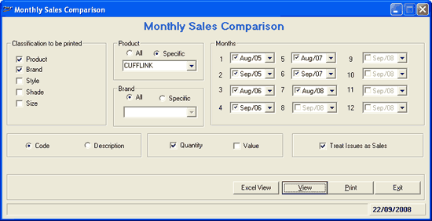

The Monthly Sales Comparison provides sales information of different months. It helps you to analyse the sales trend during different seasons of the year. A comparison report of sales in selected months of different years can be generated. The report is generated based on:
Selected item classifications
Item attributes code or description
Quantity and value
Information pertaining to a maximum of 12 months is selected when quantity or value is selected for printing. Information pertaining to only six months is selected when you choose both quantity and value to be printed.
How to reach: Reports > MIS > Monthly Sales Comparison
The Monthly Sales Comparison window is displayed.

Classification to be printed: Select the classification/s Product (class1), Brand (class2), Style (subclass1), Shade (subclass2) and/ or Size to display these fields in the report. If Product/ Brand is selected, the corresponding groups Product/ Brand will be enabled.
Product: Select All or Specific. If Specific is chosen, select the product from the list.
Brand: Select All or Specific. If Specific is chosen, select the brand from the list.
Months: Select the months for which comparison report has to be generated. You can select a maximum of 12 months.
Select Code or Description to display the corresponding values (i.e., either code or description) of the attributes in the report.
Select Quantity and/ or Value to specify the values to be compared. If either one is selected, then a maximum of 12 months can be selected for comparison. If both Quantity and Value are selected, then only 6 months can be selected for comparison. Selection of either quantity or value is mandatory to generate the report.
Treat Issues as Sales: Select to treat miscellaneous issues as sales.
Note: The Value does not include the Round Off values, because the round off is done at bill level and this report is based at Item Level.